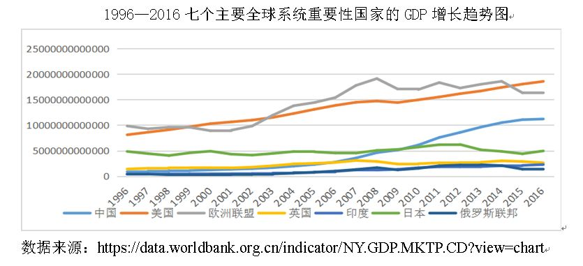
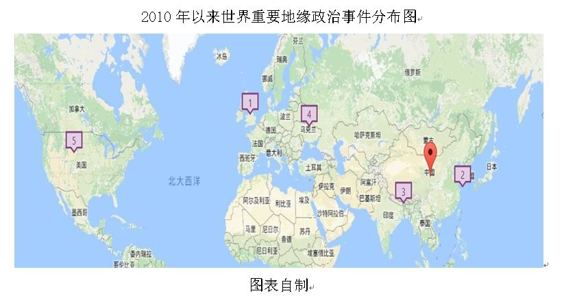
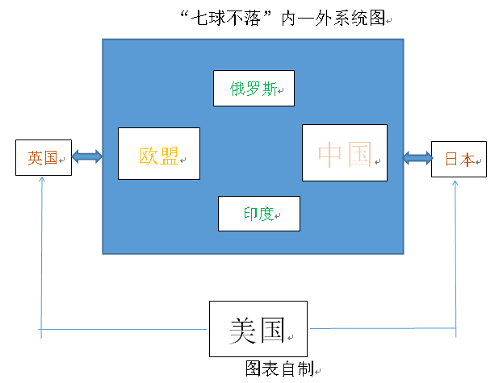
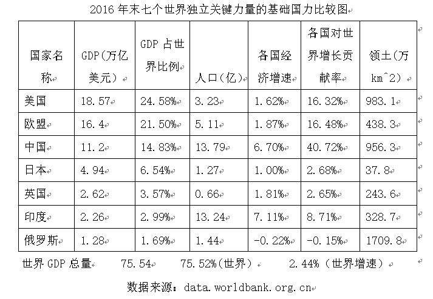
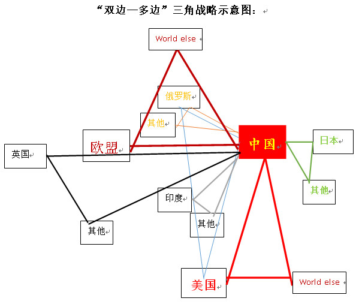

收录于合集

简
李红伟
作者单位：中共上海市委党校
本文经国政学人微信公众平台编辑首发
【摘要】 地缘冲突所造成的国际政治局势变动一直是影响世界秩序分化组合的重要因素，本文以地缘政治为研究视角分析了近年来世界秩序重构的主要趋势。在对主要大国与热点地区地缘问题回顾的过程中，发现世界秩序在地缘上正在形成以亚欧大陆为核心，以七个具有世界影响力的大国为基础，具有内，外制衡与相互依存特征的全球性权力系统。促成这一系统的关键因素包括钓鱼岛国有化，“中国快速崛起”，英国退出欧盟，乌克兰危机，美国重回“美国优先”，中印边境冲突等一系列似乎必然的重要地缘事件。当下，这一新的全球性权力系统正在将世界秩序推向“七球不落”的新常态。而中国要和平崛起并在世界秩序重构进程中发挥关键性作用，必须充分利用和驾驭这一新趋势。积极应对这一世界秩序重构进程中出现的任何挑战与问题，主动建构和维护以此为核心的世界秩序平衡，进而在结构上使全球政治迈入总体稳定的轨道。在具体的政策上，中国则更应重视大国双边外交，同时以“三角- 多边组合”的交叉外交为补充来分割各大国，从而使得未来中国在任何一组地缘关系中都成为关键或核心的主导性大国。
【关键词】 地缘政治；七球不落新常态；世界秩序；合作型均势
一、引言
**在“中国崛起”成为当今世界秩序变革最重要的因素，全球化遭遇巨大困境，地缘政治危机在全球各地频频上演的当下，进一步认识世界秩序的演变方向和探讨如何更加合理的建构新的世界秩序成为一个日益紧迫的话题。然而不论是各国政要还是政治学者之间对于这一问题的前景认知均存在明显的差异。 （研究背景，国政学人注，下同） 已有文献和观点主要将未来可能的全球秩序大致分为四类：秩序不确定性论，两超多强论，单极领导世界论和多极化论。 （文献回顾） 秩序不确定性论者，**如基辛格博士在《世界秩序》一书中认为世界秩序是权力与合法性双重因素融合的产物，同样世界秩序的变革必然伴随权力结构的转移和对合法性的重新定义，但这一新定义目前还没有确切答案。然而任何一个阶段，全球力量都会形成相对稳定的状态，世界秩序也不能是无限期过渡的状态，因此，对于当下全球力量状态的解释和对全球秩序演进方向的探索依然具有重要意义； “单极领导世界论” 主要存在于美国政界话语中，美国前任总统奥巴马在一次演讲中着重强调“America is better poised to lead and succeed in the 21th centurythan any other nation on earth”.即21世纪将继续是美国领导的世纪，现任特朗普在国内尽管是典型的反建制派，但是他上任后积极增加防务支出，其竞选口号“美国优先”和“让美国再次伟大”着眼点也在于美国继续充当世界最强的领导性权力。但是单极世界与世界权力分配的趋势明显不相符合，美国如今尽管继续作为世界第一经济，军事大国，但其经济总量在2025年左右就将被中国超越，而且它的经济实力在很长时间内一直低于欧盟的经济总量，美国显然无法继续其“单极”领导秩序的美梦。 “世界多极化论” 似乎是最流行的观点，特别是亚洲国家的群体性崛起，金砖五国，MINT四国，甚至非洲和南美洲也孕育着强国呼之欲出的种子，比如尼日利亚和巴西。与此同时，这一理论又是问题最多的，“多极世界”所塑造的世界秩序结果类似于维也纳和会形成的“欧洲协调”机制，尽管这一安排为欧洲带来了所谓的“百年和平”，但这一体系有一个前提即各国力量差异并不十分显著。英，俄，普，法，奥之间通过基于均势原则的简单组合就能相互威慑各方；同时，这一体系本质上形成的多元统治也依赖于各方差异不大的前提。但是，今天不同极之间，实力和影响力则有巨大差异，而且这一差异仍将继续扩大。美，欧，中的经济实力远远超过任何其他经济体；印度在快速崛起，然而即使在2016年其作为各大国增长最快的国家，对世界经济增长的贡献也仅有8.71%，而同期作为同样是崛起大国的中国对世界经济增长的贡献是40.72%；中，美，俄的军事实力又远远超出其他国家，因此在未来的世界秩序中，中美欧将成为占主导性的地位，其他大国充其量是不可忽视的。所以世界不会是简单的多极化的，而将在差异巨大的大国之间形成系统性互相关联的体系，每个国家在系统中所占的地位和发挥的功能都将差异明显。

相对而言， 两超多强论 似乎更符合未来世界秩序中大国关系的主要趋势，然而也有一个问题，即这和冷战时代的美苏两大阵营本质上有多大区别？当时美苏及其重要的盟友如德，法，英，日，中，南（南斯拉夫）之间不也是这样的关系吗？也正是因为如此，持此观点的人大多对中美对抗的世界秩序前景是深信不疑的，如阎学通教授在《对中美关系不稳定性的分析》一文中认为，中国崛起与美国单极霸权之间的结构性矛盾决定了在赶超美国的过程中，中美之间的战略竞争是难以避免的，两国很难建立起真正的战略友好关系。问题在于，今天的世界即使中美有意对抗，其他大国也愿意分类进入站队性的对抗秩序吗？俄罗斯和中国友好的同时没有放弃及时改善同美国关系转好的机会；欧盟是北约军事集团的重要部分，但长时间也是中国最重要的经济合作伙伴；所有其他的大国或经济体似乎都更愿意奉行全面接触而不是一边倒。第二个问题是，作为最大变量的中国本身与各国均拥有巨大的合作空间和意愿，合作性的均势而不是对抗性的均势正在出现。对抗需要划分界限，合作则需要共同融入一个政治系统。 由此本文认为，今天正在形成的正是各国基于务实的战略考量而形成的对地缘政治的调整，来适应一种整体性的世界秩序系统，世界正在形成七个大国（七球）互动的整体系统，而不是一分为二。 ** （核心论点）**
因此，不论是世界秩序不确定论，单极领导世界论，多极化论或两超多强论，都过于强调大国力量结构独立的存在，重要的是这种判断忽视了各个国家巨大的差异和他们的独特地缘属性对于世界整体秩序运行的重要意义。而在此基础上制定中国的外交战略或政策都缺乏对各国的整体衡量，往往单一的以各国实力作为相互交往的基础；在这种片面而传统的现实主义理论分析下，必然经常会得出一些结论，比如中日必有战争；中俄应该结成盟国以对抗守成大国美国的热点言论； ** （研究意义）** 本文试图借助地缘政治的系统分析，在准确定位每个关键大国地位的基础上来论述世界秩序重构的逻辑和趋势，并在此基础上对中国的外交战略与政策选择给出合理的建议。 ** （结构说明）** 反观历史，地缘冲突所造成的国际政治局势变动一直是影响世界秩序分化组合的重要因素，因此， 地缘政治变化正在将世界引向什么样的未来秩序？在新的世界秩序进程中，中国如何发挥核心参与者作用及如何应对这一秩序的不确定性？ （核心问题） 是本文研究的主要关切。相应的， 本文从地缘危机与七球不落新常态的形成，世界秩序演进新常态下大国关系的走向以及中国对七球不落新常态的应对三个方面展开讨论。
二、 世界秩序走向“七球不落”新常态
（一）地缘危机与“七球不落”新常态

标注1：英国脱欧 2016年； 标注2：中日钓鱼岛冲突 2010年；
标注3：印军越境中国2017年；标注4：乌克兰危机 2013年；
标注5：美国对自由世界秩序的逆反 2017年；
红色点：中国崛起正在快速实现。
近年来，发生在世界各个地区的地缘冲突特别是发生在大国周边以及大国之间的地缘政治冲突正将理想的自由世界秩序重新带回现实主义主导的世界之中，而其中尤其以英国脱欧；钓鱼岛中日冲突；乌克兰危机；美国全球政治重回“美国优先”以及2017年的中印边境严重对峙，中国崛起等六大政治事件对世界秩序重构影响最为迫切。
1. 中日钓鱼岛冲突：日本重回美国与亚洲大国的桥梁角色
日本自2012年实行“钓鱼岛国有化”后，与中国关系进入持续冷淡；与此同时另一个更重要的现象是在此两年前，中国的GDP已超过日本，跃居世界第二。日本变得不再那么温和而开始焦躁。于是有人认为，这是日本试图重演历史上打破中日现状的行为，极有可能预示着中日之间走上战争至少是局部战争的可能性，日本也将因此和美国彻底联合起来以压缩中国在太平洋的生存空间，如周颂伦教授。然而以上仅仅是现象的开始，短短6年后，截至到2016年末，中国的GDP总量已达到日本2.27倍且继续以比日本快得多的速度进行增长。显然日本已不具有作为中国未来对手的资格，也就谈不上中日战争。当有一天日本意识到自己和中国不是同一个级别的对手，且与大西洋上的英国一样夹在太平洋的两个超级大国之间时，日本的角色定位必将发生戏剧性的改变。本文认为，日本作为中美之间的太平洋桥梁作用将日益得到彰显，而不是其有能力作为一个和中美同样级别的秩序挑战者或主导者；日本之所以在全球地缘秩序中能成为中美未来的桥梁，还在于不管日本比中，美小多少，在未来几十年都将继续比亚洲其他任何太平洋国家要强大，这决定了日本这个不可忽视的太平洋岛国注定成为未来世界秩序的独立关键力量，但也仅仅如此。
回顾历史，当日本试图领导亚洲时，它并不很欢迎美国插足亚洲事务，并极力保持与亚洲各国的稳定关系；当日本发现自身已经丧失这一实力时，它必须寻求重回传统太平洋关键中介大国角色，作为维持美国与快速崛起的亚洲大国之间的纽带。 因此，中日钓鱼岛冲突在地缘政治上的最大意义是将日本在新世界秩序中的历史角色进行了率先定位。
2. 乌克兰危机：无所适从的亚欧大陆北部—平衡者
亚欧大陆一直是地缘政治研究的核心，也是人类文明的主要载体。哈尔福德·麦金德勋爵很早就在他的名著《民主的理想与现实》一书中将欧，亚，非大陆合称为世界岛（world island)。2013年由于乌克兰内部政治在亲欧与亲俄的撕扯下发生了总统亚努科维奇的逃俄事件，这给了亨廷顿在《文明的冲突》中提及的“无所适从”的俄罗斯一次选择的机会，强硬的普京总统没有顾及过去俄罗斯从西方获得的承认与利益，如G8成员国身份和西方对俄罗斯经济的支持。俄罗斯选择了在地缘政治上的决裂，并从决裂中分裂乌克兰，为自己的地缘战略空间底线做彻底的斗争。现实主义的权力与利益逻辑使俄罗斯看上去收获颇丰，2014年普金宣布俄罗斯正式吞并克里米亚，伫立在克里米亚的塞瓦斯托波尔港是历史上历代俄罗斯沙皇控制黑海，出击奥斯曼土耳其和试图进入地中海的重要依托，也是俄罗斯帝国的标志，如今普金无视国际法而将地缘战略与权力政治放在首位。与此同时，乌克兰东部已被亲俄罗斯力量牢牢控制，乌克兰某种程度上成为了西方与俄罗斯在地缘战略上的均势象征。
普京在“乌克兰事件”中将俄罗斯重新从欧洲一体化的企图中独立出来，这是俄罗斯作为一个独立大国的重要步骤。但长期来看，俄罗斯在经济上无疑是需要西方的，我们还不应忽略一个事实即不论西方与俄罗斯表面有多大的矛盾，俄罗斯在文化认同上是一个欧洲国家；值得注意的是，俄罗斯在世界经济中的地位正在发生一泻千里的变化，2016年国内生产总值在七个独立关键性大国中最低，仅为1.28万亿美元；世界占比1.69%同样垫底；经济增速则是其中唯一负增长的，为-0.22%，同时也拉低了世界经济增速-0.15%个百分点。经济上的困境难以支撑政治上的长久强硬，所以俄罗斯始终对改善美俄，美欧关系持积极态度。这一点对中俄关系具有启发意义，俄罗斯是中国外交中唯一定位为战略协作伙伴关系的国家，然而俄罗斯绝对不是战略同盟。 还应该认识到它是一个独立的横亘在亚欧大陆北方的政治军事大国和可以影响到整个世界秩序稳定与否的关键力量，然而鉴于其极其有限的经济体量与潜力，从根本上决定了俄罗斯是未来世界秩序中亚欧大陆地缘政治的平衡者而不是主导者；
3. 英国脱欧：重回美欧桥梁角色
就在亚欧大陆东缘和中部发生地缘政治的现实主义回归，国家利益和均势概念逐渐盛行的时候，亚欧大陆西端，卡梅伦政府领导的保守党也向民众许诺就英国是否继续留在欧盟进行公投，上一次英国就此事进行公投发生在英国刚刚加入欧共体的两年后（1975）。结果2016年6月23日，英国民众以51.9%对48.1%的微弱优势宣告英国将离开欧盟。对于全球化的积极支持者和深化一体化改革的人们来说，这是一次颇为震动的黑天鹅事件，与此同时有关英国脱欧的各种研究成果也层出不穷。主要体现在英国脱欧对欧盟的负面影响，对全球化的负面影响和对英国自身的负面影响，当然其中也有对英国脱欧持客观态度和乐观态度的人。但是英国与欧盟的关系必须回到历史和现实之中。历史上英国长期是大陆之外的平衡者，是均势外交最擅长的大西洋国家；在大英帝国衰落后，英国积极以美英特殊关系为纽带，在北约和欧洲一体化中试图发挥关键作用。但是在欧盟内部，英国的影响力显然无法和德国的经济以及法国的政治相比，与此同时，欧盟如今的一体化和对成员国主权让渡的要求已经超出英国的预期。作为一个实用主义的大国，正如王展鹏在《英国脱欧公投与“多速欧洲”的前景》一文所说，英国在参与欧洲一体化过程中一直是“半心半意”的伙伴和疑欧主义传统最为深厚的国家之一。其对欧盟统一大市场的兴趣远远超出欧盟作为一个统一的政治实体。
所以，英国在地缘政治中独立了出来，重新成为大西洋两岸，两个巨型经济体的桥梁，承担起美欧平衡者的掮客角色；
4.美国优先：现实主义政治的回归
2017年，特朗普在美国大选中的胜出无疑对美国和世界局势产生了重要影响。在外交政策上则让美国从传统外交逐渐回归到“美国优先”的保守状态；截至目前他已经退出奥巴马曾一直推动的TPP和重要的全球气候合作框架《巴黎协定》，无论是结束还是重置美国的新亚太角色或是在北约军费开支上扯皮，种种迹象表明，美国在地缘政治战略安排上正变得更加务实和重视利益交换；“美国优先”指导下的结果是经济上的民粹主义和军事上的实力主义，创造更多美国的就业机会和扩充军备是特朗普所采取的重要政治行为，美国似乎以一个全球化受害者的角色出现而不是其曾一直扮演的全球化领导者角色。某种程度上，特朗普的“美国优先”，结束了自卡特以来美国所强烈向世界试图普及的“价值观外交”，代之以现实主义政治和实力导向；民主与人权让位于利益，地缘政治和现实主义将美国人重新拉回复杂的现实世界。
尽管对于特朗普的“美国优先”有诸多异见，但是客观上美国回到了欧亚大陆地缘政治系统的外围，并重新作为一个强大的外部力量试图在任何地区重大冲突中凭借其得天独厚的地理优势和依然让很多国家难以望其项背的国家实力发挥关键作用 。因此美国作为世界秩序的关键大国，依托美日同盟和美英特殊关系从亚欧大陆的两端一直渗透进亚欧大陆的政治内部，组成了世界秩序在地缘政治系统的关键外部系统。
5. 印度侵入中国边境：无所适从的亚欧大陆南部—平衡者
在亚洲的群体性崛起中，印度是仅次于中国的广受关注的南亚地区大国。凭借其世界第二的人口总量和近年来快速的经济增长，印度正日益成为亚欧大陆地缘政治的关键力量。同时印度越来越担心甚至嫉妒中国的崛起，防备心也逐渐加强。2017年6月印度公然违背国际法，以第三国身份在中国和不丹边境进入中国境内并发生中印军队对峙。从国家实力的角度来看，尽管印度经济增长趋势不错，但是和中国的综合实力相差甚远。2016年末，印度国内生产总值为2.26万亿美元，而同期中国高达11.2万亿，差不多是印度的5倍；同时中印增速差距极小，仅相差0.41个百分点，这意味着就就增量来看，中国也是印度的5倍；在7个独立关键性大国中，印度排倒数第二，所以中印目前和未来的很长一段时间都不会是同等级别的对手。1962年发生的中印边境战争印度以惨败告终，但为何在明知对手强大，自己不占道义优势，又有历史惨重教训的情况下，印度依然决定冒险和中国对抗呢？答案依然是地缘政治的变革。印度始终想成为一个有影响力的大国甚至世界大国，其势必不会选择靠边站，并争取在地缘政治博弈中占据独立位置。由此可见，与中国的金砖机制和发展中国家共同利益并不能消解其日益膨胀的野心，印度越来越没有安全感和对中国产生地缘猜疑。未来，其必更加积极引入外部势力来平衡发生在南亚的实力劣势，美，俄，日，欧等其他大国都可能成为其希望合作以抵消所谓中国威胁的重点对象国。
可以看到，就中期而言，在亚欧大陆的地缘政治秩序变革及以其为核心的世界秩序重构进程中，印度因为其国力所限和区位特点都难以成为一个真正的世界秩序的主导者，又因为其国力日渐增长和不安全感的上升，印度将成为一个对亚洲，西方等各种力量无所适从的独立的大国。这一点与俄罗斯相似，只是一个在亚欧大陆的北部，一个在其南部。
6. 中国崛起：秩序重构的最重要变量
中国崛起可以说是当今世界最重大的地缘战略事件，且为未来世界秩序奠定了最重要的关键性力量之一；中国一直并将继续是全球地缘政治中的独立关键力量。与欧盟和美国的角色相似，中国远远领先于周边任何大国，且国力不断上升。今天，中国的经济总量位居世界第二达到11.2万亿美元，尽管经济进入新常态，但支撑经济增长的经济支柱和活力都没有变，中国在进行史上最大规模的城镇化和最大规模的创新创业计划，每年数以千万的人口进入城市，同时每天就有1.5万家新企业诞生。国家实力增强就像一颗树，当它幼小的时候，它的树影只能遮盖旁边的花花草草；而当它快速成长为一颗参天大树的时候，它便和旁边的楼房，远处的大树互相交映，并对周围大片小树的生存提供养料。中国崛起在地缘上就像这颗大树的成长之路。所以改革开放之初，中国积极施行地缘战略中的“韬光养晦，有所作为”，在远离中国周边的冲突中持超脱态度。但是今天，中国已经是世界一半以上国家的最大贸易国，对外贸易总量也位居世界第一，中国每年对世界增长贡献超过五分之二，达40.72%，成为毋庸置疑的世界增长引擎。利益的扩展和实力的扩张必然对整个世界秩序形成巨大冲击力，不论是主动的还是被动的，中国的崛起必然导致世界对中国的重新定位和中国地缘政治战略的调整。
作为亚欧大陆东缘濒临太平洋的潜在超级大国，中国和欧盟形成一东一西的亚欧大陆地缘政治系统的双核心，对内通过整个大陆和大陆上的关键力量相互对接，中欧成为亚欧大陆地缘政治的核心稳定器。对外分别通过太平洋和大西洋的关键力量与外部超级大国美国相互影响，这种内外系统的平衡与交叉互动无疑奠定了世界秩序稳定的新基石。 由此形成以中欧为地缘政治稳定器，俄，印为关键平衡者，以亚欧大陆为核心载体的内部地缘政治系统和以美国为外部核心，以英，日为关键桥梁的地缘政治外部系统。七个独立的关键大国通过内外系统的平衡与互动打造了面向未来的世界秩序—“七球不落”新常态。

说明：蓝色区域：核心地缘体系内部系统—世界岛（亚欧大陆）
红色区域：世界秩序链接的关键力量（英，日）
绿色区域：世界岛内部体系链接的关键（俄，印）
( 二）七球支撑的全球性权力重构

地缘政治为核心的世界秩序重构从来是以国家实力结构变化为前提的，这是传统现实主义和华尔兹的结构现实主义共同坚持的基本理论逻辑。七个大国的实力结构和实力变化趋势正是奠定“七球不落”新常态秩序的基本因素。同时，大国未必就是独立关键力量，只有对世界秩序起系统性关键作用的国家才具有此种角色，例如同样作为金砖大国的巴西和南非就因为未能成为亚欧大陆和地缘政治系统的成员而未能成为关键力量。七球支撑的全球性权力重构正在有条不紊的从趋势变为现实。
乌克兰危机和英国脱欧使得欧盟东部和西部同时走向现实主义逻辑，对欧洲一体化进程和欧洲一直以来引以为豪的“软实力”外交形成巨大冲击。但欧洲的一体化之路并非因此而陷入一些学者所谓的致命危机，相反这两次危机使欧洲更加紧密的团结在一起，并消除了最重要的不确定性大国隐患。地缘政治的回归是对现实最好的回应，而不是不符合现实的需要，英国和俄罗斯不论是谁都无法容忍自己的伟大在欧洲进程中沦为二流。结果就是一个理想主义的欧洲破灭了，但是三个独立关键力量同时得到确认—俄罗斯，英国和更加紧密团结的欧盟；与此同时，英国脱欧加快了“七球不落”格局的形成。 这一新常态将世界秩序以亚欧大陆为核心分成两个系统；内部系统由中欧主导，俄印作为规范性关键力量；外部系统的核心则是美国。然而美国介入内部系统，进而介入全球地缘政治核心体系的主要凭借正是日本和英国，一个居于亚欧大陆东缘的太平洋，链接中国端；一个居于亚欧大陆西缘的大西洋，链接欧盟端；
日本和英国有诸多相似的地方，使的其难以适应各自地缘临近国家的战略联盟体系；第一， 两国均拥有相对独立于大陆政治体系的文化传统，并在历史上数次试图操纵大陆政治；在与大陆核心大国交往中始终保持必要的距离；第二，两国都是近代工业革命后世界秩序的主要参与者和重要甚至核心大国，历史优越感与民族优越感强烈 ；第三， 两国今天均为发达国家，且都是有一定地区和全球影响力的大国； 最后， 两国与美国都有着复杂而紧密的历史关系，英国曾是美国殖民地时期的宗主国，也是美国白人（央格鲁- 撒克逊人）的主要来源国，自独立战争以来，两国保持了特殊的一致立场；日本虽然在二战中主动对美开战，但是战后，日本实际沦为受美国保护的盟国，在应对一战，二战，冷战及各类全球重大事务中均保持最为紧密的同盟关系，今天的日本外交政策也始终强调以“美日同盟”为基轴来开展全球外交； 综合以上四点考量：英国和日本是亚欧大陆核心体系的重要边缘大国，但与此同时，美英特殊关系和美日同盟将美国与两国牢牢绑在一起。两国成为沟通内部系统与外部系统的关键桥梁。这种桥梁作用同时也是两国成为世界秩序重构中无法忽视的独立关键力量。
在东方，尽管中俄继续保持了良好的战略协作伙伴关系，这主要由于俄罗斯在西方和中国在太平洋共同受到美国日益强烈的应对。乌克兰问题和南海问题的长期化意味着中俄的地缘安全共同关切将继续加强，但这与中，俄是两个长久以来就相互防范的独立大国并不冲突。
三、七球不落与大国关系走向：相互依存下的合作型均势建构
（一）交叉构筑的安全网络
拿破仑战争后，1815年欧洲各国在维也纳订立了象征百年和平的《维也纳条约》，这是继威斯特伐利亚体系之后欧洲大陆的第二次体系调整，也称维也纳体系。维也纳体系抛弃了之前独立主权国家间的丛林状态，而是将大国间互相交叉的“均势”原则发挥到极致。德，英，俄，法，奥主导的五大国建构了错综复杂，相互交错的三角关系，任何一方的联盟都无法对其他联盟形成力量优势。这也使得均势不在明显的敌对阵营中获得，而是从各国相互依赖，互相重合中获得。五国的良性互动在1862年俾斯麦任德国首相后，为确保俾斯麦领导下的德国在和平的秩序中赢得崛起，起了十分重要的作用。这对今天中国的和平崛起以及对外部和平秩序的主动建构有着重要的启发意义。维也纳体系的核心是英国处于大陆均势的力量之外，作为欧洲大陆的力量平衡者，施行“大陆均势”外交，在法，普之间摇摆。俄国则充当了欧洲宪兵，试图成为超级霸权，但是其1853到1856年试图夺取土耳其海峡，进入地中海和北非的企图被其他大国联合起来很快绞杀，霸权美梦破灭。这就是著名的克里米亚战争，这一战同时也是百年和平期间欧洲发生的唯一一次国际战争，更是对欧洲复杂灵活均势战略之成功的最好注脚。更加精彩的三角均势重叠运用来自俾斯麦对“小德意志”统一战略的运筹帷幄。俾斯麦先利用普奥作为神圣罗马帝国主要成员的近邻关系与奥地利及相关小国结盟，进攻丹麦，收复重要领土；后立即转向取得法国拿破仑三世的中立承诺，与奥地利开展，奥地利战败，普鲁士成为德国统一唯一的依靠。但是与法国开战在即，普鲁士需要奥地利的配合，俾斯麦早在其进攻维也纳时就通过不攻取维也纳卖给了奥地利人情，果然奥地利没有让他失望，普鲁士打败了欧洲陆军最强大的法国，德国统一水到渠成。
****今天的国家间关系自然不同于以往只言利益不讲手段的大国争霸，但是大国力量间的平衡和基于均势建构和平的逻辑并没有变。基于此，本文将上述均势运用的大逻辑归结为“双边+多边”的三角重叠战略。 双边是作为大国的双边关系，多边是与两个大国相关的其他小国，由于中国在与除美国之外的任何大国进行力量对比时都有优势，因此，这种“双边+多边”的三角关系应成为中国建构全球战略时的主要政策取向。 鉴于此，本文认为，基于作为体系内崛起之超级大国的优势，中国应建立“中印他”为核心的南亚-印度洋合作机制； “中日他”为核心的东亚—东南亚合作机制；“中欧他”为核心的一带一路互联互动合作机制；“中英他”为核心的跨海陆合作机制；这四组大三角多边体系同时必须确保以下三个原则：一，每个体系在具体区域都是极具包容性的；二，每个体系对于区域外部的大国，都是具有排他性的；三，任何一个“中-某-他”体系，都不包含美国。这三条原则将确保：中国在任何一个地缘内部关系网中的主导性地位，同时将其他所有地缘国家都纳入与中国有关的利益联系中，更好的织就中国崛起的总体战略体系。在对美战略中，中国则应积极建构基于中美俄三方为核心的战略平衡机制，同时辅助以“中俄他”为核心的系统内多边体系，后一体系将确保中国在中俄关系中的主导地位。
（二）大国互动形式的变革：合作型均势
合作型均势建构的核心来自以上对交叉安全网络建构的分析，如下图：

备注：
World else：中美之外的世界其他国家或中欧之外的世界其他国家；
蓝色三角：中俄美政治战略大三角，也是唯一有三球且无其他力量参与的大三角；
暗红色三角：中欧+其他，一带一路互联互动合作机制，即一带一路战略三角。欧盟与中国作为亚欧大陆平衡的两个核心，处于对等力量，应该在更高层面上建构多元的合作体系；
深红色三角：中美俄+（中美+其他）即太平洋战略三角；中美作为世界最重要的两个核心大国，应该建构多元的合作体系；同时中美的安全建构中应包含俄罗斯；
浅灰色三角：中印他，南亚-印度洋合作机制；
褐色三角：中俄他；亚欧大陆安全伙伴；
黑色三角：中英他；跨海陆合作机制；
绿色三角：中日他，东亚—东南亚合作机制；
其中，中印他；中俄他；中英他；中日他等四个三角战略体系中，中国都占绝对主导地位。
以上即为“七球不落”新常态下，中国的战略应对策略组合。
**** 四、七球不落与中国应对：复杂的权力互动关系
( 一）明确对手—亦和亦争
“时代”问题一直是中国外交战略决策的根本依据所在，但是”和平与发展“为主流的世界趋势下，大国纷争和世界动荡却从未远去。各个大国之间的合作与竞争关系错综复杂，因此理清双边和多边共同利益，找到彼此在政治，经济，安全，意识形态等各类重大关切问题上的分歧，是大国正确交往的关键。历史表明，长久的和平不是来自理想主义的趋同，而是来自务实的面对与解决。在这一过程中，首先是界定对手。对手区别于敌人，任何在同一问题上持不同立场的两方或多方之间都互成对手。例如中美之间，尽管存在关于价值观，意识形态，人权，贸易等等诸多领域的冲突， 但是中美不能互相界定为敌人，而只能是对手，因此中美关系问题的解决方案最后都要回归到双方如何通过务实的解决彼此关切而在相互冲突中谋取和平。 如果是敌人的关系界定，则意味着除对抗以外的路径都被否定，而且往往容易引发“自我实现”的战争。
然而正如帕麦斯顿勋爵所言“没有永恒的敌人也没有永恒的朋友，只有永恒的国家利益”，对于任何一个对手，都必须以利益来界定关系，当今各国关系的复杂交织意味着大国间利益本身就酝酿着诸多冲突点，例如两国在意识形态上的分歧不能抵消两国在经济上的相互依存，因此任何单一幻想和平或执著于对抗的企图都是片面和危险的，相应的，中国在制定针对大国的外交战略时必须坚守有理有据，争和相济的方式，而不能是完全亲如兄弟或一棒子打死的一刀切。同时既然各国的关系是由利益界定的，明确对手的前提便是明确双边之间的复杂利益关系。当今大国间的复杂关系远远超出传统大国条理清晰的分割。以中美关系中分歧与合作分析为例：一般认为，中美分歧主要集中在以下领域：意识形态；人权；价值观；关于世界秩序的建构规则；经贸摩擦；人民币汇率等；而中美的合作领域主要集中在：世界人道主义救援；全球性危机；关于世界秩序建构对人类共同命运的福祉；经贸相互依赖；可以看到，分歧与合作存在于同一领域是中美关系的重要特征，没有一个清楚的边界能够确定两国在某个领域是绝对的敌人或合作者，因此处理中美关系的核心原则不能是传统意义上的合作或对抗，或者在任何领域的单一合作与对抗，而是在任何领域都要保持充分的沟通，协调与和争相济，在任何一个领域都要注重双方的尊重与互谅互让。具体到某个领域，比如人权问题，过去美国经常指责中国在人权保护与立法上的不足，而中国总是以绝对主权原则对这种干涉中国内政行为进行强烈的回击。但是今天“国家尊重和保障人权”已经写入中华人民共和国宪法，这说明中国对人权问题进行了有则改之，无责加勉的务实调整。反观之，美国对黑人人权的保护和对少数族裔权利的保护难道就值得称道吗，因此，本文认为人权问题是国际社会的共同问题，我国宪法不应省略下一句，即中国希望其他国家在关于肤色歧视，少数族裔保护等诸多问题上取得进展，以共同促进全人类人权事业的进步。这一表述意味着在人权领域，中美有共同的分歧和利益所在，而不是一个站在道义制高点另一个却只能被动接受的相互关系。这一解决方案的方法论同时也适应于中美在其他领域的合作与斗争开展。
另外，中国还必须积极寻求与亚欧大陆东西缘的紧密团结，并积极瓦解日，英两国作为域外超级大国深入亚欧大陆核心的跳板作用， 寻求在未来逐渐实现中日政治关系正常化，将日本纳入中俄主导的某一三角体系，同时将英国纳入中欧主导的某一体系，这样的三角安排有利于中国在任何一个三角中实现领导性，并提升各个力量的国际地位。 同时中国应积极寻求建立中美俄三方安全稳定机制， 中俄印三方安全机制，中欧俄三方机制等，这些看似大胆的设想对于已经崛起的中国至关重要。通过七球不落所组成的，域内外复杂的稳定性网络，奉行实力与责任对等和相互尊重原则，必然能使中国成为未来世界秩序中的最大赢家。毫无疑问的是，世界上最强大的国家成为世界秩序中最大的受益者，这是符合自然逻辑的，也必将更加有利于世界和平与稳定，过往的世界大战正是放弃这些原则的结果。
（二）不与最强者为敌
“战略忍耐”是中国人的古老哲学，这里的忍耐并不是一味妥协，也不是有朝一日要进行报复性的进攻，而是一种大气谦和的崛起战略。进行战略忍耐的最重要依据就是国家实力对比。中国尽管在各个领域的实力和影响力方面都已经或正在成为当之无愧的全球第二，但是关于中美必有一战的话题也越来越有市场。因此，我们必须明确回答，中国是否决定与依然综合实力最强的美国进行一场战争。实际上，这不只将中美的命运绑在了核导弹上，甚至将人类命运也可能绑在核导弹上 ， 因此，中美之间的任何冲突都必须回到理性和主动管控的轨道上来。
应该看到，历史的发展必然意味着理念的变迁，德国崛起的经验更多的是思想的有限借鉴和启发，而具体的方式则必须与当下的世界秩序趋势相结合，同时要符合世界不同时代的国际行为规则。 今天的中国崛起与德国崛起面临相似的地缘安全困境，但与此同时避免“休昔底德陷进”的和平崛起又是中国面临的最重要约束，即不能发生与最强大国家间的战争 。因此中国应从德国崛起中学习其理念而不是德国崛起的手段，这要求中国在拒绝结盟式的对抗政治下开辟新的和平崛起路径，即新型大国和平崛起之路。
以俾斯麦应对英国强权地位为例，他始终试图确保两个重要原则，即第一，不与英国（域外最强的国家-守成国）为敌；第二， 阻止潜在敌国与其他国家结盟（截断法国，特别是阻止法俄接近）；这一方案的启示意义在于不仅要防止与最强大国家为敌，同时也要防止强大的对手联盟成立。这必然要求，在自我的战略设定中，不能在任何同一个条约组织中包含太多强者。 因此本文认为，中国防止与最强国为敌的策略如下：
第一，新的世界秩序不能是对旧世界秩序的推倒重来，也不能是简单的修修补补，这使得新世界秩序建构一定是同时具有继承性和创新性的。 一个有生命力的新的世界秩序取决于其是否能顺应世界大势所要求的合法性，能否为人类社会带来更加良好的秩序前景。这种建构智慧首先体现在关于未来世界秩序建构的原则上。因此，中国在坚守和平共处五项原则同时，伴随中国崛起，中国与其他大国的利益交织也必将越来越复杂，相互尊重和加强彼此沟通将变得更加重要。所以有必要使主权原则和不干涉内政原则在大国外交中相对弱化，这就要求各国对这两项原则予以更包容的理解，最后将这两项原则融入相互尊重原则。
第二，在实力与责任对等原则的指导下，在引导各国共同参与的情况下实现未来世界秩序的利益分配最优化。 利益分配平衡是保持和平的钥匙。特别是目前亚洲各国都认为自己在崛起，但只有中国的崛起是唯一具有世界性的，将不可避免的在很大程度上修正现有世界秩序。因此，如何平衡中国与其他国家间的利益分配具有很大挑战性。
第三，在一个现实主义逻辑支配的，大国纵横捭阖的世界，必须强调均势，集体安全和地缘实力等传统因素对避免强国直面战争，重塑世界秩序的重要作用。 强调三者对破除大国安全困境的制衡作用，是确保未来世界秩序和平，稳定与持续繁荣的关键内容。这要求我们将“相互尊重”确立为大国之间的基础原则，同时，重视实力与责任对等原则对大国相互平衡的重要作用，重申国家实力在世界秩序建构中的重要性和决定性作用。
（三）敌友转化与各个击破
综合来看，亚欧大陆为核心的世界地缘政治衍生出的七球关系中，中欧为核心的两端，分居大陆的东西缘，决定了世界秩序的战争与和平。美国作为强有力的域外势力平衡者，俄罗斯作为重要的域内势力平衡者，对世界秩序走向具有重要影响力，日本和英国则因成为链接域内外的特殊联通性和其作为强国的地位而成为足够重要的世界性力量。同时，美英特殊关系和美日特殊关系并不是巧合，而是自然的地缘法则支配形成的控制性力量，对于美国曾领导的全球性力量来说，这两个国家成为美国试图控制世界岛的最重要跳板。
由于强大的综合实力和对过去世界秩序的重要支配性地位，美国是亚欧大陆地缘系统的外部最重要因素，也是关乎中国崛起的最重要因素，所以分析基于美国视角的地缘战略对制定针对性的战略回应政策具有重要意义。 首先，美国通过建构美英特殊关系和美日同盟为基轴的亚太战略，利用英，日两国作为世界体系内外沟通的关键链接，从东西两个方向深深的影响了亚欧大陆的战略平衡。同时，美国积极营造美印中三角关系使中国处于印度洋绝对劣势；构建美欧俄三角关系，使俄罗斯在巴尔干和东欧处于绝对劣势；这就是三角逆推情况下美国控制世界权力秩序格局的传统方法。“知己知彼，百战不殆”，克服美国的战略障碍必须从了解美国这一传统方法的弱点开始， 通过认真分析其中奥秘就会发现美国几大难以克服的战略弱点，而这也是中国采取分化—重组战略的重要空间：
第一， 美国不是亚欧大陆国家，更不是亚欧大陆的主导国家，其对亚欧大陆的主导权完全建立在间接控制的基础上，且始终作为一种体系外重要因素而存在；因此，中国完全可以充分利用自身作为亚欧大陆东缘和太平洋西岸双重核心大国的地位打造直接的战略伙伴合作机制，例如中日或中国—东南亚+其他太平洋国家的合作机制，以及运筹帷幄中国与欧盟双向开发的亚欧大陆战略。
第二， 美国未敢建立中美俄为基础的战略性三角关系，因为在这一三角中，作为经济超级大国的中国+作为战略军事力量超级大国的俄罗斯=与美国完全平行的超级大国（政治力量在经济与军事力量基础上是不言自明的）。届时，美国将可能处于相对劣势；而中国则借此应进一步夯实俄罗斯的战略协作伙伴关系，加强安全合作并升级地缘政治互信的坚实伙伴关系。当然这一步骤必须辅助可制衡俄罗斯的中俄+其他三角机制。
第三， 尽管日本和印度在今天与中国存在传统的“远交近攻”型的地缘安全困境，即日本，印度通过主动靠近美国而制约其强大邻国中国的战略力量，但是也应看到，中印，中日之间的近邻关系使得中国完全可以建构中印+周边其他国家的优势三角以及中日+其他的战略三角体系，从而塑造21世纪亚洲的核心地位，而这明显是美国最为担心的。
五、结论
地缘政治的现实主义回归，特别是“中国崛起”，正剧烈的重塑着新的世界秩序。其正在形成以亚欧大陆为核心，以中国，欧盟，俄罗斯，印度，日本，英国，美国等七个具有世界影响力的大国为基础，具有内，外制衡与相互依存特征的全球性权力系统。 在这一若想保持全球和平与持续繁荣，就要保证“七球不落”的新系统中，中国要想和平崛起并在世界秩序重构进程中发挥关键性作用，必须积极应对这一世界秩序重构进程中出现的任何挑战与地缘危机，主动建构和维护以“七球不落”为核心的世界秩序平衡，进而在结构上使全球政治迈入总体稳定的轨道。与此同时，作为亚欧大陆东缘濒临太平洋的潜在超级大国，中国和欧盟形成一东一西的亚欧大陆地缘政治系统的双核心，对内通过整个大陆和大陆上的关键力量相互对接，中欧成为亚欧大陆地缘政治的核心稳定器。对外则分别通过太平洋和大西洋的关键力量与外部超级大国美国相互影响，这种内外系统的平衡与交叉互动无疑奠定了世界秩序稳定的新基石。由此形成以中—欧为地缘政治稳定器，俄，印为关键平衡者，以亚欧大陆为核心载体的内部地缘政治系统和以美国为外部核心，以英，日为关键桥梁的地缘政治外部系统。至此，七个独立的全球系统性重要大国通过内外系统的平衡与互动打造了面向未来的世界秩序—即“七球不落”新常态。
同时，为调适和应对“七球不落”新常态为核心的新世界秩序趋势，重要需主动交叉构筑全球战略安全网络。 首先，以“双边+多边”的三角关系作为中国建构全球战略时的主要政策取向。其次，基于作为体系内崛起之超级大国的优势，中国应建立“中印他”为核心的南亚- 印度洋合作机制；“中日他”为核心的东亚—东南亚合作机制；“中欧他”为核心的一带一路互联互动合作机制；“中英他”为核心的跨海陆合作机制；最后，利用在这四组大三角多边体系中的主导性优势，来确保相关大国间的战略平衡。这四组大三角体系还应具备以下特征：第一，每个体系在具体区域都是极具包容性的；第二，每个体系对于区域外部的大国，都是具有排他性的；第三，任何一个“中-某-他”体系，都不包含美国。由此，将除美国之外的其他所有地缘大国都纳入与中国有关的利益联系中，从而更好的织就中国崛起的总体战略体系。在对美战略中，中国则应积极建构基于中美俄三方为核心的战略平衡机制，同时辅助以“中俄他”为核心的系统内多边体系，后一体系将确保中国在中俄关系中的主导地位。
其次，世界秩序越来越走向“合作型均势”而非传统的对抗性均势，这也是最符合中国和平崛起利益的选择。 在此过程中，中国应首先明确对手，采取亦和亦争的灵活战略，这一战略的主要依据在于：当今世界，分歧与合作存在于同一领域是大国关系的重要特征，没有一个清楚的边界能够确定任何两国在某个领域是绝对的敌人或合作者。相应的，中国还必须积极寻求与亚欧大陆东—西缘的紧密团结，并积极瓦解日，英两国作为域外超级大国美国深入亚欧大陆核心的跳板作用，寻求在未来逐渐实现中日政治关系正常化，将日本纳入中俄主导的某一三角体系，同时将英国纳入中欧主导的某一体系，这样的三角安排有利于中国在任何一个三角中继续实现领导性，并提升各个力量的国际地位。
最后，考虑到中美关系稳定对世界秩序稳定的决定性作用，中国必须采取“不与最强者为敌”战略，这包括：第一， 在新的世界秩序建构中，不能对旧的世界秩序进行推倒重来，也不能是简单的修修补补，因此这一难题兼具继承性和创新性。 第二， 必须在实力与责任对等原则的指导下，在引导各国共同参与的情况下实现未来世界秩序的利益分配最优化，利益优化配置是秩序良好运行的关键。 第三， 将“相互尊重”确立为大国之间的基础原则，同时，重视国家实力在世界秩序建构中的决定性作用。 第四， 实施敌友转化与各个击破战略。充分利用自身作为亚欧大陆东缘和太平洋西岸双重核心大国的地位打造直接的战略伙伴合作机制，例如中日或中国—东南亚+其他太平洋国家的合作机制，以及运筹帷幄中国与欧盟双向开发的亚欧大陆战略。同样重要的是，进一步夯实与俄罗斯的战略协作伙伴关系，加强安全合作并升级地缘政治互信。当然这一步骤必须辅助可制衡俄罗斯的中俄+其他三角机制。全球地缘政治环境继续发生着深刻的变化，世界秩序重构的趋势也日趋明朗，中国必将在未来的世界秩序体系中发挥特殊的领导性作用。
（本文经过删减，详见原文）
文章来源：《领导科学论坛》2017年第21期
筛选：晞哲 编辑：小宜